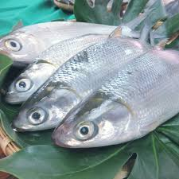
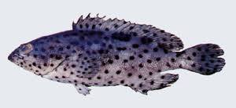

養殖場
<虱目魚>

虱目魚（學名Chanos chanos）是東南亞一帶的重要魚獲物，溫水性魚類，分布在亞熱帶或熱帶的海域。其他俗名有海草魚、安平魚、國姓魚、麻虱目、麻虱目仔、遮目魚、狀元魚、牛奶魚（英語： milk fish）等。
在東太平洋由南美洲北部延伸到加州中南部都可見其蹤跡，在西太平洋和印度洋〈尤其由台灣南部沿海一直穿過巴士海峽延伸到印度群島〉其行蹤更為頻繁。因為不耐寒，所以魚塭水溫過低會造成大量死亡。除了臺灣養殖此魚以外，菲律賓和印尼等東南亞國家也有虱目魚養殖。而臺灣的虱目魚養殖技術，被認為最早係由荷蘭人自印尼引入臺灣[2]。
虱目魚肉質鮮美，是極受台灣南部歡迎的平民魚料理，魚肚更是肥美別具風味，常見的料理手法是煎魚、佐湯煮成魚粥或製成魚丸。唯細小魚刺多於其他常見食用魚是麻煩之處。
<石斑>

石斑魚（英語：Grouper）泛指鱸形目鮨科石斑魚亞科（學名：Epinephelinae）裡的各屬魚類。
並非所有鮨科魚都被稱為「石斑魚」；該科魚類還包括鱸魚。石斑魚通常指兩大屬魚類：石斑魚屬及喙鱸屬。除此以外，Anyperidon屬、駝背鱸屬、鱗鮨屬、纖齒鱸屬、貧鱠屬及鱠屬的魚類也會被稱為石斑魚，而鰓棘鱸屬的魚類則被稱為珊瑚斑魚。不過，某些鴛鴛鮨屬、九棘鱸屬、側牙鱸屬、角紋鮨屬、東洋鱸屬、副花鮨屬等屬於石斑魚亞科魚，及個別的其他鮨科魚類，有時也會被冠上石斑魚的稱號。
石斑魚的英語名稱 grouper 來自於葡萄牙語 garoupa 一詞，跟英語裡的 group （團體）無關。
石斑魚屬於輻鰭魚綱，身體肥厚，口部大，並不適宜長途迅速游泳。石斑魚體型相當大，身長可達一公尺以上，體重超過一百公斤也不足為奇；不過石斑魚的種類頗多，體型大小也各有差別。牠們會把獵物吞噬，而不會用口把獵物逐片撕開；這是因為牠們的顎沒有很多牙齒，可是在咽頭裡的牙板可以碾碎食物。牠們習慣等待魚、章魚、螃蟹、龍蝦等獵物靠近，而不會在廣闊的水域追逐獵物。
由於很多種類的石斑魚都是重要的食用魚，因此現在魚商養殖了不少的石斑魚；而在深海釣魚活動中，石斑魚是很受歡迎的魚類。一些體型較小的石斑魚種會被養在水族館裡，但牠們的生長速度其實也非常快。
一種名為鞍帶石斑魚的魚可以長得非常巨大，曾有報導說有鞍帶石斑魚長得足以把泳客或水肺潛水員吞噬：當英國作家亞瑟·C·克拉克於斯里蘭卡海岸潛水時，發現了一條二十英尺(約6公尺)長、四英尺(約1.2公尺)厚的石斑魚，生活在一個下沉了的浮檯裡。1970年代一本水肺潛水雜誌記載了一宗事故，一個潛水員在加州潛水的時候被一條巨型石斑魚完全吞噬，該魚試圖用咽頭牙板將該潛水員壓碎，幸好只能壓凹其氧氣筒，隨後把該潛水員吐出。要吞噬一個使用開放式呼吸系統的水肺潛水員，石斑魚的喉部至少要張開到兩平方英尺(約0.2平方公尺)；鞍帶石斑魚通常不會長到這麼大，因為如果要躲避鯊魚的攻擊，牠必須要有足夠大的庇護所；不過隨著遠洋漁業延繩釣使鯊魚數量減少，這種情況可能會有改變。（最近有報導稱獵殺鯊魚使石斑魚的數量上升，因此鸚哥魚的數量也隨之下降，導致珊瑚礁裡的藻類生長過速。）